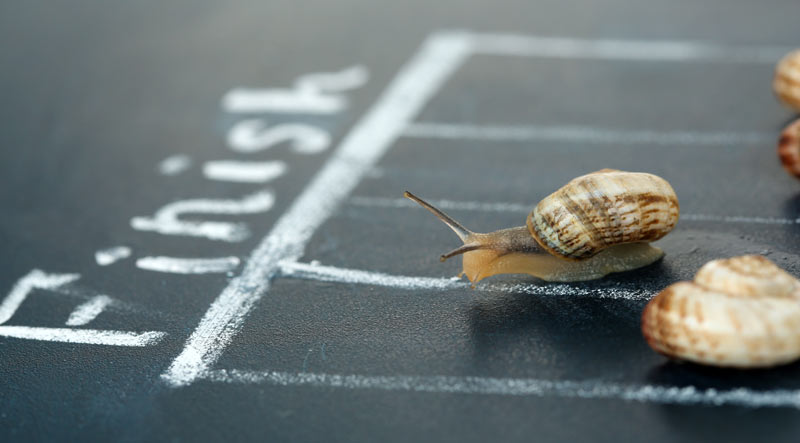

Let's Talk About Kyle for a Wyle
This whole entire thing is about Kyle

My name is Kyle Mayer. I'm 210 dog years old. I was born and braised in Albuquerque, New Mexico.
I have many interests. I like playing various instruments, and my personal favorites are the triangle and jazz flute. I also enjoy producing doom-metal folk music, acrylic painting, and I've recently gotten into home brewing coffee! I also enjoy drifting in my Smart car on Central at 3am on Tuesdays with the bois.

A really real photo of me going really fast (but not at 3am).
I also love keeping up on underground snail racing. The above photo is one of my favorite racers, Greta, at a championship I hosted on my own chalkboard a while ago. She's even faster than she looks.
I am the happiest when I am learning something new. For instance, I just learned that I'm 30 years old in human years. Amazing!
My previous career 35 dog-years ago was in the restaurant industry. I was burnt out as a sous chef and needed a career change so I went back to school for computer science. I eventually changed my major to Computer Information Systems Programming concentration and graduated with an associate's Spring of 2020. I am taking this bootcamp to learn more about web development and the networking opportunities, as well as how to sit in a chair for 40 hours a week.
Shown below is a picture of my wife, son, and myself at Christmas. It was my son's first Christmas! He is 7 dog years old as of January 7th - it was his 'golden' birthday, if you will - and he's growing fast! My family is another reason for me taking on the challenge of this bootcamp. I want to be able to support them with a stable career in software development while also being able to pursue my dream of having my own fleet of sponsored racing snails. I understand the former won't be as lucrative as the latter, but we all need to start somewhere, yeah?

Wow, you read all of that? Check this out for more, then, I guess: